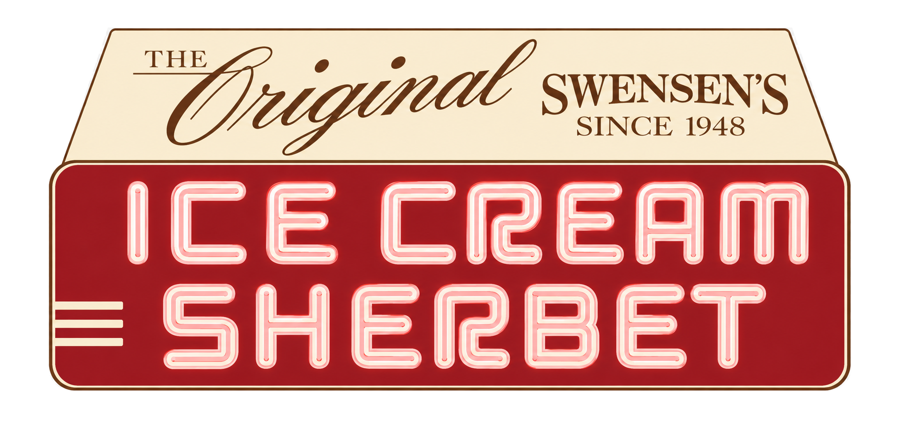
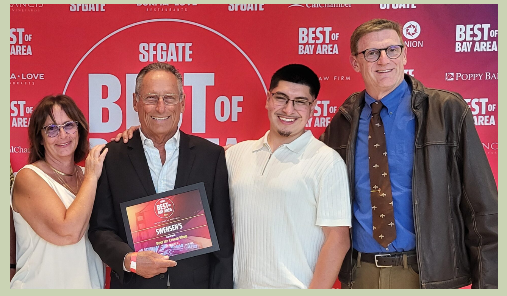

Ice cream at sea
Earle learns to make ice cream aboard a troop transport in the South Pacific.
From a shipboard ice cream freezer to the original corner at Hyde & Union.


“Ice cream is my life.”— Earle Swensen
During World War II, Earle learned to make ice cream aboard a troop transport in the South Pacific. What began beside the ship's freezer became the work he wanted to spend his life doing.
After returning to San Francisco, he went back to his job as a deputy city assessor—but the ice cream stayed with him. In April 1948, Earle and his wife, Nora, used their $750 savings and borrowed $5,000 to open See Us Freeze Ice Cream at Union and Hyde.
Business was slow at first. Earle worked at the city office by day, listened to customers, and refined recipes at the parlor by night. Eventually he left the office behind, gave the shop his name, and became San Francisco's “Mr. Ice Cream.”
From Earle's first batch at sea to a San Francisco Legacy Business.
Drag, swipe, or use the arrowsEarle learns to make ice cream aboard a troop transport in the South Pacific.
Earle and Nora open at Union and Hyde with their savings, a loan, and a one-can ice cream machine.
Richard Campana starts behind the counter and begins learning Earle's recipes.
Richard becomes manager and trains new franchisees at the original San Francisco shop.
The San Francisco Chronicle gives Earle the nickname that captures his life's work.
Earle's daughters sell the original parlor to the man who had protected it for decades.
Richard's daughter, Diane, and her husband, Jim, step in to keep the parlor going.
San Francisco recognizes Swensen's as part of the city's living cultural history.
As each chapter reaches the center of the page, its photograph comes forward.
The shop opened under the playful name See Us Freeze Ice Cream. When it took Earle's name, the little Russian Hill parlor became the birthplace of Swensen's—while remaining its own independent San Francisco store.
Richard Campana began working behind the counter in 1959 at just fifteen years old. By 1964 he was the manager, preserving Earle's standards and teaching new franchisees how to make every flavor at the original shop.
Richard became the owner in 1998. When the pandemic put the parlor's future in doubt, his daughter Diane and her husband Jim stepped in during June 2020 and learned what it would take to carry the shop forward.
Every drop of ice cream has been made in-house since 1948. Jim builds flavor after flavor from each base while the team finishes house-made waffle cones, hand-drizzled caramel, and the classics guests return for.




The corner storefront, the classic menu board, the team behind the counter, and another batch being made in-house—our history is not a display. It is the everyday life of the parlor.
1999 Hyde Street · San Francisco, California